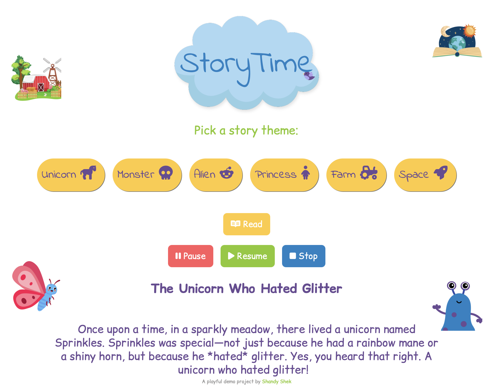
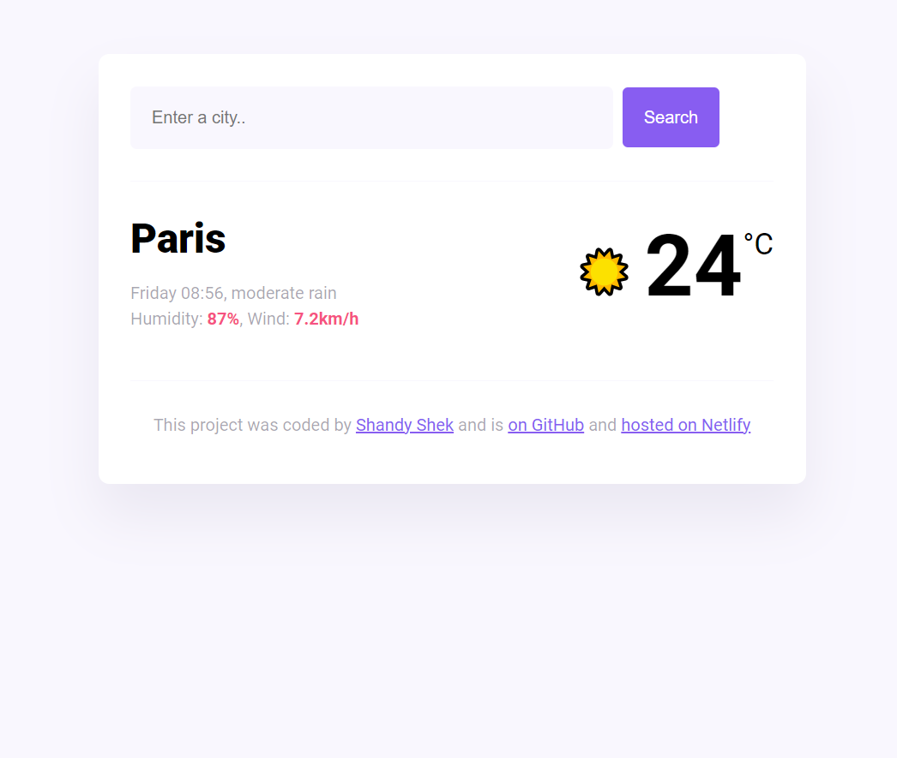
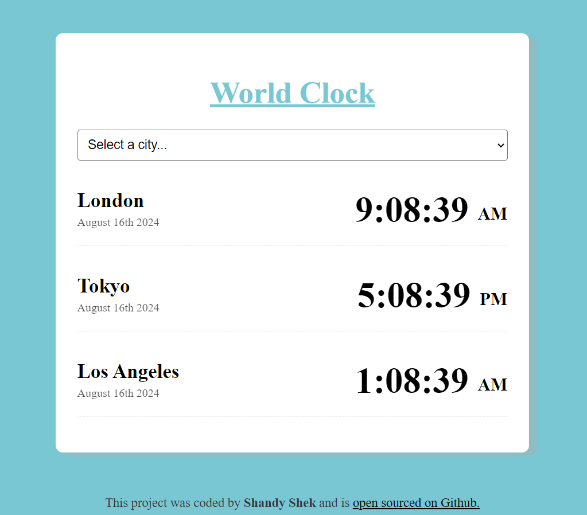

Hello
Narrated Stories
Developed an interactive children's story generator leveraging Cohere for natural language generation and ElevenLabs for realistic voice narration. Designed to showcase seamless API integration, dynamic user interaction, and a playful UI that enhances user engagement through AI-driven storytelling.
Launch Story Generator

Weather Forecast
Built a responsive application that fetches real-time weather data and forecasts using external API. Enables users to check current conditions, alerts, and detailed weather insights for any global location. Focused on accurate data handling and intuitive user interface.
Launch Weather AppWorld Clock
Developed a multi-time-zone clock application tailored for remote teams and international users. Allows users to track global time zones and coordinate meetings seamlessly. Emphasizes clean UI, responsive layout, and time management functionality.
Launch World Clock App

Recipe Generator
Created an AI-powered recipe app to generate personalized recipes based on user input. Users can select cuisine types and dietary preferences. Features include tracking cooking history and delivering tailored content, showcasing prompt engineering and user experience design.
Launch Recipe App